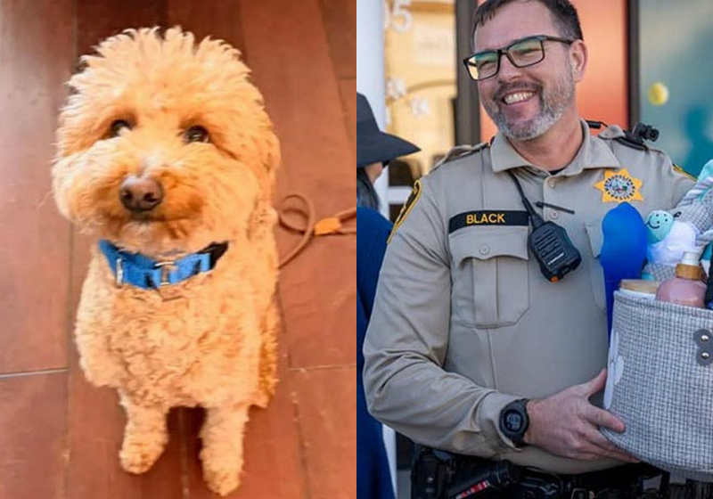

Cachorrinho abandonado em aeroporto é adotado por policial que o resgatou
Resumo Copilot | Publicado em: 26/02/2026

Um cachorrinho da raça goldendoodle foi abandonado no Aeroporto Internacional de Las Vegas depois que sua tutora não conseguiu embarcar com ele. Ela o deixou amarrado em uma estrutura metálica e seguiu viagem — mas o que parecia o início de uma história triste acabou ganhando um final super feliz.
Funcionários do aeroporto chamaram a polícia, e o agente Skeeter Black participou do resgate. O filhotinho ficou alguns dias sob cuidados de uma ONG e, como ninguém voltou para buscá-lo, o policial decidiu adotá-lo. Agora, o cãozinho ganhou um novo nome — Jet Blue — e uma nova família cheia de carinho e proteção.
Uma história que começou com abandono e terminou com um lar quentinho, amor e esperança.
Fonte: Só Notícia Boa